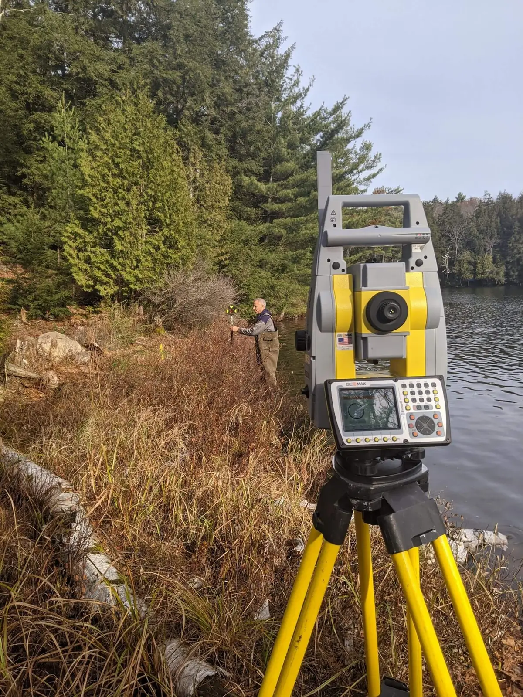

Home / Services / Settlement and deformation monitoring
Settlement and deformation monitoring
When an engineer, municipality or road authority needs proof that the ground or a structure is not moving, we set the monitoring points, measure them on a schedule and report every reading against the baseline.
When you need it
When movement has to be measured
- A sinkhole or void has been repaired and the authority wants monitoring afterward
- Excavation, shoring or a watermain is going in beside a road or an existing building
- Fill or a preload has been placed and the engineer needs to know when settlement has stopped
- A permit or approval condition calls for a settlement monitoring plan
- A structure is suspected of moving and the owner needs numbers
What you receive
A program your engineer can rely on
- A written monitoring plan: marker type and locations, benchmarks, frequency and action level
- Monitoring pins, nails or plates set to suit pavement, ground or structure
- Independent benchmarks outside the zone of influence
- A baseline survey, then readings at the agreed interval
- A report after each visit, with every point compared to the baseline in tables and graphs
- Immediate notice to all parties if a reading passes the action level
- Reports signed by an Ontario Land Surveyor

Good to know
Millimetres need method
Settlement is measured in millimetres, so the result is only as good as the benchmarks and the procedure. We use two independent benchmarks away from the work and the same instruments and routine on every visit.
The geotechnical or project engineer usually sets the action level and the frequency, for example weekly at first and less often once readings are stable. We can draft the monitoring plan for their approval.
Each report shows the trend for every point, so a slow movement is seen before it reaches the limit.
Common questions
Questions we hear most
How precise are the readings?
We work to the repeatability the engineer specifies, typically a few millimetres. The monitoring plan states the figure and how it is achieved.
How long does a program run?
As long as the engineer or authority requires. Many start with weekly readings and move to monthly or quarterly once the points are stable.
Can you write the monitoring plan as well?
Yes. We prepare the plan for the engineer or approval authority to review, then carry it out.
Related
Often needed with this
Topographic survey
Elevations, contours, trees, buildings and boundaries in one drawing, for your architect, designer or engineer.
Construction layout and certificates
Excavation staking, foundation pinning, gridlines and the foundation certificates your municipality requires.
Drone, 3D scanning and bathymetric surveys
Aerial mapping, orthophotos, 3D laser scanning, volumes and lake-bottom soundings.
Request a quote
Get a fixed-fee quote for your monitoring program
Tell us the property address and what you are planning. We reply with a written, fixed-fee proposal, so you know the price before any work starts.
- The property address or legal description
- What you are doing: buying, building, fencing, severing
- Any old survey or drawing you have (you can attach it on the contact page), and your deadline

Prefer to talk it through?
705 434 0411Or ask us to call you, usually within minutes →244 Barrie St, Thornton, ON L0L 2N0
Your project
No obligation. We use your details only to prepare the quote.
The form did not load. Please call 705 434 0411 and we will take the details by phone.